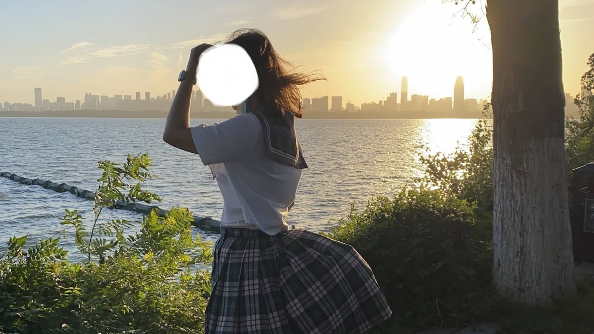
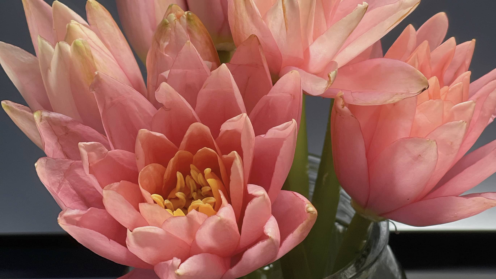
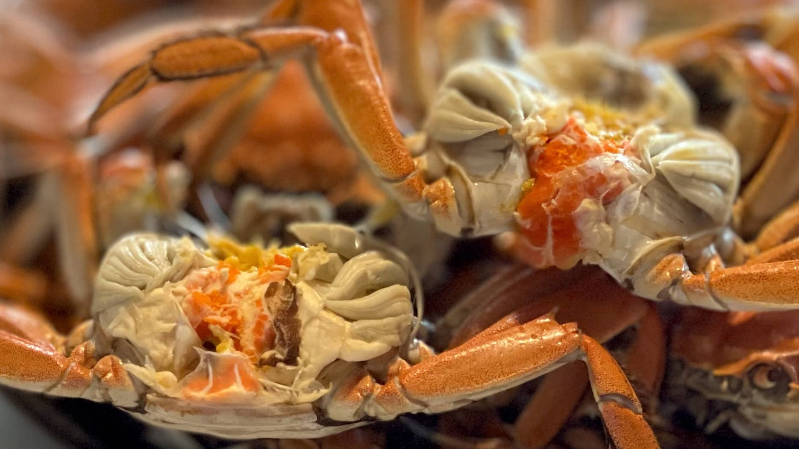
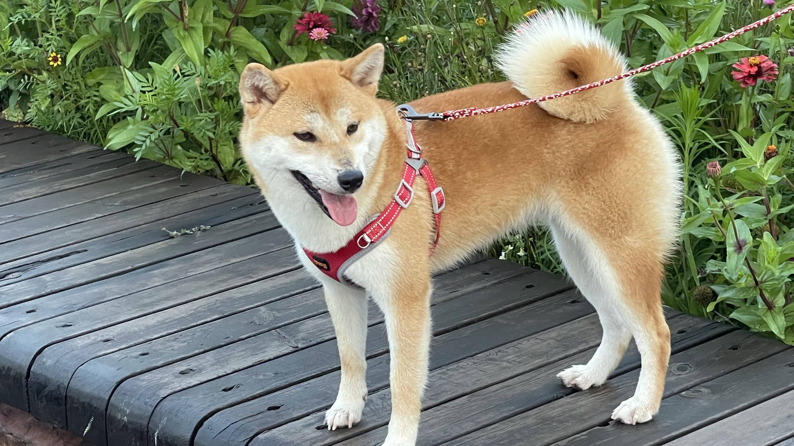

玉东园，放空的好去处
Shoot by 千千 on 2022-05-15
所有地方都关闭，只有大自然可以找到属于自己的快乐
北坞公园很有名的桥
Shoot by 千千 on 2022-05-15
不得不说这个免费的公园是所有海淀人民在疫情期间的快乐老家
阿姨用画笔给灰暗的静默生活上色
Shoot by 千千 on 2022-05-15
野餐旁边有露营的阿姨在画画，在压抑中无声地反抗
好吃又好拍的四叶寿司，让我见识了高端日料
Shoot by 千千 on 2022-05-08
是坐着滴滴自己来的便当！！奢侈了一把
关闭堂食只能室外吃小吊梨汤
Shoot by 千千 on 2022-05-03
在融科门口蹲着就着柳絮吃饭，五味杂陈
西郊线：超级日系的小火车
Shoot by 千千 on 2022-05-02
香山 国家植物园 颐和园西门
学习了日麻之后，eq 带我和北京字节的大佬们面麻
Shoot by 千千 on 2022-04-17
立直麻将太烧脑了，字节的大佬们都好厉害的
人见人爱的咕咕噜
Shoot by 千千 on 2022-02-24
可爱的融科谷歌 logo，每次路过都想啃一口w

这个雪季学习了单板滑雪
Shoot by 千千 on 2022-02-13
是一项上瘾的户外运动，但是非常有趣w
最后一次飞 WUH-SHE 航线
Shoot by 千千 on 2021-06-19
毕业了，最美的一次飞行视野，是武汉送我最后的礼物

在东湖骑车看日落
Shoot by 千千 on 2021-06-04
摄于武汉东湖

粉色睡莲
Shoot by 千千 on 2021-03-26
摄于武汉家中
好吃的冰淇淋w
Shoot by 千千 on 2021-06-12
摄于武汉国广用心餐厅
武汉大学赏樱
Shoot by 千千 on 2021-03-10
下雨天拍樱花
武汉大学赏樱
Shoot by 千千 on 2021-03-10
下雨天拍樱花第二弹
群光二馆的猫猫
Shoot by 千千 on 2021-05-20
摄于武汉群光广场

稻田蟹
Shoot by 千千 on 2021-09-02
最爱吃家乡的河蟹
乌云还是阳光？
Shoot by 千千 on 2021-06-19
我不知道答案
循礼门花市
Shoot by 千千 on 2021-05-5
摄于武汉循礼门单洞花市
可爱 pocky 宝
Shoot by 千千 on 2021-11-21
摄于雪后家中

花花和 pocky
Shoot by 千千 on 2021-08-17
洗澡澡出门玩
伙伴请喝大鹅www
Shoot by 千千 on 2021-04-02
家边店认识了一个伙伴会拉花拉大鹅！好厉害